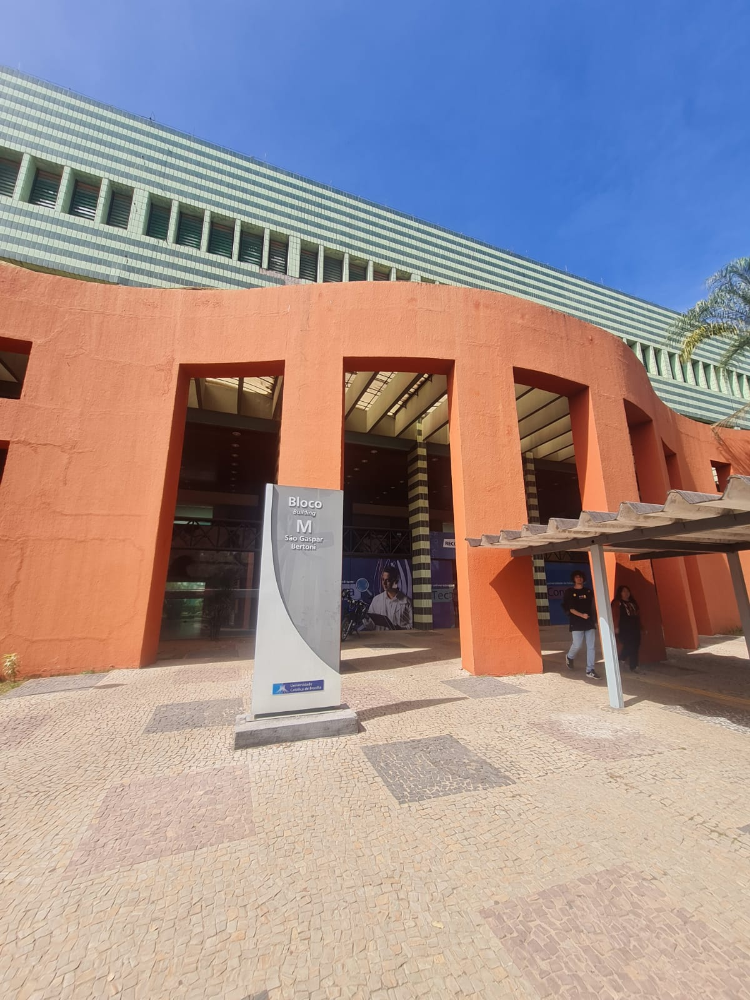

DESCRIÇÃO
O Bloco M é um bloco da cor verde no formato de um triângulo visto de cima, também conhecido entre os estudantes e funcionários como "melancia", possuindo laboratórios de informática destinados ás aulas, auditório, banheiros e um espaço de convivência na entrada do bloco com mesas e cadeiras ideais para estudo e socialização..
SALAS E DEPARTAMENTOS
- TÉRREO: salas M003 até M008, auditório e um CyberLab usado para estudos e realização de tarefas e trabalhos.
- 1º ANDAR: salas M101 a M126, copa e sala dos professores;
- 2º ANDAR: salas M201 a M230 e copa;
- 3º ANDAR: salas M301 a M336, contendo laboratórios de diversas disciplinas como Física, Computação e etc.